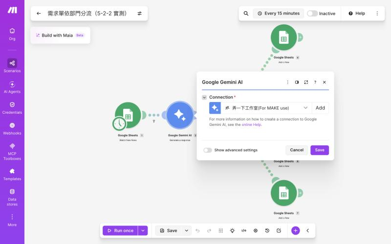
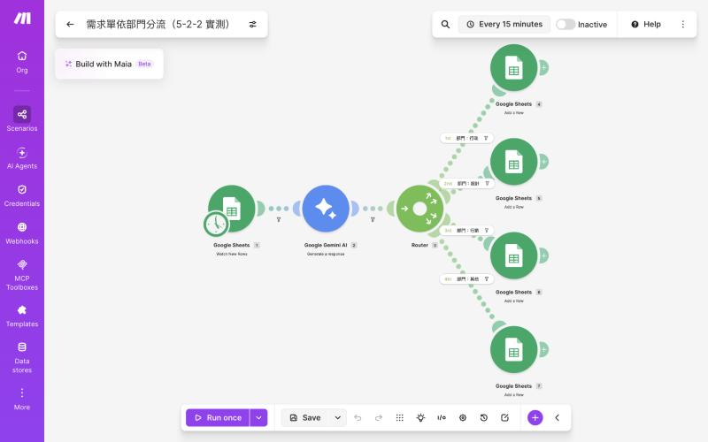

生成式 AI 工作應用班｜Part 5 用 AI 整理訊息，交給 Make 自動處理｜5-2（第二篇）
把指示放進 Make：AI 判斷部門，流程分成四條路
上一篇，你在 AI 對話工具裡把「判斷部門」的指示試到穩定，存在自己的文件裡。這一篇要把它交給流程：每收到一張需求單，Make 就把需求內容連同這段指示送給 AI，拿到「行政」「設計」「行銷」「其他」其中一個詞，再依這個詞把單子送往不同的路，在處理紀錄寫下「交給哪個部門」。
做完以後，禾光的需求單會這樣流動：同事送出 → 流程讀到新的一列 → AI 判斷部門 → 流程依部門分開走 → 處理紀錄寫下「交給行政」或「交給設計」。這是 5-1-1 拆出來的第 2 步，第一次由 AI 和流程一起完成。
讀完這一篇，你會學會：申請一把 Gemini 金鑰，讓 Make 能使用 AI；把試好的指示放進 Make 的 AI 模組，並指定它讀哪一欄；用 Router 和篩選，讓流程依 AI 的回答分成幾條路；放進流程後，再用同一批單驗一次，判錯了就補規則。
Make 要怎麼使用 AI：金鑰
上一篇是你自己打開 AI 對話工具、貼上指示。放進流程以後，換成 Make 替你去問 AI。這門課讓 Make 使用的是 Google 的 AI「Gemini」：Make 每問一次，Google 都要知道是誰在用，所以你要先向 Google 申請一把金鑰（英文是 API Key），再交給 Make。
金鑰就像一組密碼：一長串英文和數字，誰拿到它，就能用你的名義使用 Gemini。所以只把它貼在 Make 的連線設定裡，不要傳給別人，也不要貼在公開的地方。申請金鑰的地方叫 Google AI Studio，用你的 Google 帳號登入就能申請；免費方案不需要綁信用卡，練習用的量也不會產生費用。
Make 怎麼依 AI 的回答分路：Router 和篩選
到目前為止，你的流程都是一條直線：觸發 → 動作。這一篇要讓它在 AI 判斷完以後分岔，用到兩樣新東西。
Router（分流器）是一個把一條路分成好幾條路的模組。資料走到 Router，會被送往後面每一條路的路口。
篩選（filter）是每條路口的檢查站，只放行符合條件的資料。這一篇的條件都是同一種寫法：「AI 的回答包含『行政』這兩個字」。一張判斷成「設計」的單走到行政那條路的路口，不符合條件，就被擋下；走到設計那條路的路口，符合條件，就放行。
| 路 | 篩選條件：AI 的回答包含 | 這條路做什麼 |
|---|---|---|
| 第 1 條 | 行政 | 在處理紀錄寫一列，處理狀態「交給行政」 |
| 第 2 條 | 設計 | 在處理紀錄寫一列，處理狀態「交給設計」 |
| 第 3 條 | 行銷 | 在處理紀錄寫一列，處理狀態「交給行銷」 |
| 第 4 條 | 其他 | 在處理紀錄寫一列，處理狀態「交給其他」 |
這也是 5-2-1 要你把指示試穩的原因：AI 只回一個詞，一張單就只會通過一個檢查站；如果 AI 回了一大段，裡面同時寫到「行政」和「設計」，這張單就會同時走進兩條路。
開始動手
動手前先知道三件事。
- 這一篇建一條新流程：5-1-2 那條「需求單自動記錄（練習）」不用改，保持原樣。新流程叫「需求單依部門分流（練習）」，同樣監看「表單回覆 1」。
- 先多準備兩張單：目前表單回覆只有王小美一張，只會走行政那條路。先多填兩張，才看得出流程真的分開走。
- 點數：這條流程每處理一張單，大約用掉 2 點（AI 一次、寫入一次）。
多填兩張需求單
- 打開 5-1-1 建的需求單（用「複製作答者連結」開的那個網址）。
- 照下面填第一張，按 提交。
- 再打開一次表單，照下面填第二張，按 提交。
第一張｜申請人姓名：陳志明｜申請人 Email：zhiming.chen@example.com｜需求內容：12 月 AI 入門講座需要一張 IG 宣傳圖，尺寸 1080×1080，標題「AI 入門：從聊天到自動化」。｜希望完成日期：2026-12-05
第二張｜申請人姓名：許文傑｜申請人 Email：wenjie.xu@example.com｜需求內容：我的筆電一直當機，可以找人幫我看一下嗎？｜希望完成日期：2026-11-30
做完會看到：「表單回覆 1」有三列：王小美、陳志明、許文傑。
申請 Gemini 金鑰
- 在瀏覽器網址列輸入
aistudio.google.com/apikey，按 Enter，用你的 Google 帳號登入。 - 如果頁面上已經有一把金鑰，就用它；Google 會替第一次使用的人自動建好一把。
- 如果頁面上沒有金鑰，按右上角的 Create API key（建立金鑰），照畫面完成建立。
- 按金鑰旁邊的複製圖示，把金鑰複製下來。
做完會看到：「API Keys」頁面上有一把金鑰，下方標著「Free tier」（免費方案）。
建新流程，加上監看新增的列
- 在 Make 左邊選單點 Scenarios，再點 Create scenario。
- 加 Google Sheets 的 Watch New Rows，選「Google 連線（練習）」、你的「(回覆)」試算表、分頁「表單回覆 1」，按 Save。
- 「Choose where to start」選 All，按 Save。
這一步和 5-1-2 建觸發的做法一樣。選 All 是為了讓三張單都被讀到。
加 AI 模組，連上 Gemini
- 把滑鼠移到觸發模組右邊，按冒出來的 ＋。
- 搜尋
Google Gemini AI，點 Generate a response（產生回答）。 - 點一下這個新模組，在 Connection 那一欄按 Create a connection 或 Add。
- 連線名稱改成
Gemini 連線（練習）。 - 在 API Key 那一欄貼上第 2 步複製的金鑰，按 Save。

做完會看到：Connection 顯示「Gemini 連線（練習）」，下面多出 AI Model、Messages 等欄位。
把試好的指示放進 AI 模組
- 在 AI Model（AI 模型）選 Gemini 3.5 Flash Lite。
- 在 Messages（訊息）的 Item 1，Role（角色）選 User。
- 在 Parts 的 Item 1，Message Type（訊息類型）選 Text（文字）。
- 在下方出現的文字框，貼上你在 5-2-1 存好的指示。
- 把游標放在最後一行「需求內容：」後面，點旁邊跳出的清單裡的 需求內容 (D)。
- 按 Save。
最後一步和 5-1-2 的對應是同一件事：在 5-2-1，你每次手動把一張單的需求內容貼在「需求內容：」後面；放進流程以後，改成告訴 Make「這裡放表單回覆的需求內容那一欄」，每張單就會自動換成那張單的內容。
加 Router
- 把滑鼠移到 AI 模組右邊，按 ＋。
- 搜尋
Router，點 Router。
做完會看到：AI 模組後面多了一個綠色、帶箭頭的圓形模組，就是 Router。
建四條路
四條路的做法都一樣，只差在下表的三個值。每一條路都照下面的清單做一次。
| 路 | 篩選的名稱 | 篩選條件：包含 | 處理狀態填 |
|---|---|---|---|
| 第 1 條 | 部門：行政 | 行政 | 交給行政 |
| 第 2 條 | 部門：設計 | 設計 | 交給設計 |
| 第 3 條 | 部門：行銷 | 行銷 | 交給行銷 |
| 第 4 條 | 部門：其他 | 其他 | 交給其他 |
- 按 Router 右邊的 ＋，加 Google Sheets 的 Add a Row。
- 選同一份「(回覆)」試算表、分頁 處理紀錄。
- 對應欄位：收到時間 ← 時間戳記 (A)，申請人姓名 ← 申請人姓名 (B)，需求內容 ← 需求內容 (D)，處理狀態打表上那一條路的「處理狀態填」。按 Save。
- 點 Router 和這個模組之間的連線，選 Set up a filter（設定篩選）。
- 在 Label（名稱）打表上的「篩選的名稱」。
- 在 Condition（條件）的第一個空格，從清單點 AI 模組底下的 Result，也就是 AI 的回答。
- 中間的比較方式選 Text operators 裡的 Contains（包含）。
- 第二個空格打表上的「篩選條件：包含」那個詞，按 OK。

做完會看到：Router 後面分出四條路，每條路的連線上標著篩選的名稱，例如「部門：行政」，路的盡頭各有一個 Add a Row。
取名、存檔、執行一次
- 點左上角的流程名稱，改成
需求單依部門分流（練習）。 - 按下方的 Save。
- 按 Run once。
- 打開試算表的「處理紀錄」分頁。
做完會看到：處理紀錄多了三列。王小美「交給行政」、陳志明「交給設計」；許文傑那張，大概也會是「交給行政」。王小美在 5-1-2 已經記過一筆「已收到」，這是新流程替她記的第二筆。
換了 AI，要用同幾張單再驗一次
許文傑的筆電當機，不是行政負責的事，為什麼會被判成行政？講師用同一段指示測過：在 AI 對話工具裡，這張單判成「其他」；放進 Make，換成 Gemini 來判，卻判成「行政」。推測是部門表寫了「行政：設備借用」，Gemini 把筆電也當成了設備。
這就是上一篇沒辦法替你測到的地方：你在對話工具裡用的 AI，和 Make 裡用的 Gemini，不一定是同一個。同一段指示交給不同的 AI，讀法可能不一樣。所以在對話工具裡試穩只是第一關；放進流程以後，還要用同幾張單再驗一次，判錯的就回頭補規則。
補一句規則
- 點 AI 模組，打開設定。
- 在文字框裡找到「其他：」那一行，改成：
其他：判斷不出部門、一張單裡有好幾件事，或不屬於以上任何部門的事（例如電腦、網路故障） - 按 Save，再按下方的 Save 存檔。
- 打開你在 5-2-1 存指示的文件，把這一行也改成一樣。
再驗一次
- 打開需求單，再填一次許文傑那張（內容和第 1 步一樣），按 提交。
- 回到 Make，按 Run once。
- 打開「處理紀錄」。
為什麼要再填一次：5-1-2 說過，Make 會記得自己讀到哪一列。前三張這條流程已經讀過，再按 Run once 也不會重讀，所以要送一張新的單，讓流程用改好的指示判斷。
做完會看到：處理紀錄最下面多了一列，許文傑「交給其他」。
四張單、三個部門加上「其他」，你沒有替任何一張判斷部門。判斷交給了 AI，分路交給了流程，你做的是把指示寫清楚、放進去之後再驗一次：這就是 5-1-1 那張表上的第 2 步。要確認每張單走了哪條路，也可以點畫面下方的 History（執行紀錄），每條路會標出這張單有沒有通過篩選。
常見問題
處理紀錄一列都沒有多
可能是 AI 的回答沒有被任何一條路放行。打開執行紀錄，點 AI 模組看它回了什麼；如果回答多了字或和四個詞都不一樣，回到 5-2-1 的指示檢查規則那一行。也可能是金鑰沒有貼對，AI 模組會顯示錯誤，重新複製一次金鑰，再到 Connection 建一次連線。
同一張單在處理紀錄出現兩列，兩個部門
AI 的回答裡同時出現兩個部門的名字。回到 5-2-1，用這張單的內容再試一次指示，必要時在規則加一句，讓它只回一個詞。
不看講義，試著用自己的話回答：
- Make 為什麼需要 Gemini 金鑰？拿到金鑰要注意什麼？
- Router 和篩選各做什麼？一張判斷成「行銷」的單，走到行政那條路的路口會發生什麼事？
- AI 模組指示最後的「需求內容：」後面，為什麼要放「需求內容 (D)」，而不是貼一張單的內容？
- 指示已經在 AI 對話工具裡試穩了，為什麼放進 Make 之後還要再驗一次？
接下來
現在每張單都知道該交給誰了，但負責的人還不知道有新的單。5-3 要做第 3 到第 6 步：請 AI 寫摘要、看出缺了什麼資料，再用 Gmail 通知負責的人；資料不夠時，存一封請申請人補件的草稿。